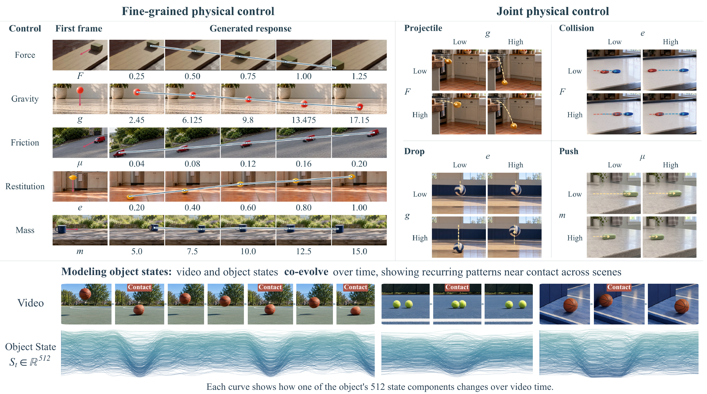

Locate each object
The Reader gathers object-specific information from the current video features to update a sequence of latent states for each object.
Controlling how objects move, interact, and evolve through physical parameters.
01 / Generalization
From simulated rigid-body training to photographic scenes with human subjects: vary gravity, friction, or restitution while keeping the input scene fixed.
02 / Method
EnactPhys adds an object-state branch to a pretrained video diffusion Transformer. Physical parameters guide how each object’s states evolve over time and interact with other objects; the updated states then guide video denoising.

The Reader gathers object-specific information from the current video features to update a sequence of latent states for each object.
Force F, gravity g, and mass m condition temporal attention within each object’s state sequence.
Separate, learned gates weight contact, restitution e, and friction μ messages between objects and their support surfaces.
The Writer returns updated state information to the corresponding object regions. States pass on to the next adapted block within each denoising pass.
The model takes an initial image, first-frame object masks, object identities, a text prompt, and physical conditions. Future object locations and state updates are predicted during denoising. The ground-truth masks shown in the diagram supervise training.
03 / Parameter sweeps
Change one physical parameter while keeping the scene fixed: a five-level gravity sweep, followed by force and restitution examples.

04 / Composed events
Departure, fall, and rebound in one video. Restitution varies while force and gravity remain fixed.
05 / Baseline comparison
Compare EnactPhys, Phantom, ControlNet, and Text-only under matched scenes, requested parameter values, and seeds. Each method retains its benchmark inference settings.
Compare motion along the ramp across five friction settings.
Rows: EnactPhys, Phantom, ControlNet, and Text-only. Columns: five parameter settings. Full 49-frame sequences at their recorded 16 fps.
Markers indicate observed positions at a shared time within each panel. Connecting lines guide comparisons across settings; they are not temporal trajectories. The force panel uses a shared enlarged crop. Force and mass include closely spaced responses.

06 / Joint control
Vary two physical parameters in the same scene, spanning projectile motion, collisions, drops, pushes, and sliding.
07 / Visual gallery
Sliding, pushing, falling, projectile motion, and collisions. Each row compares three control levels.
08 / State analysis
Generated videos paired with the saved 512-dimensional object states.
Selected qualitative examples. Web previews are compressed; original videos are linked under Prompt & settings or Visualization details. All frames and recorded frame rates are preserved. Example settings